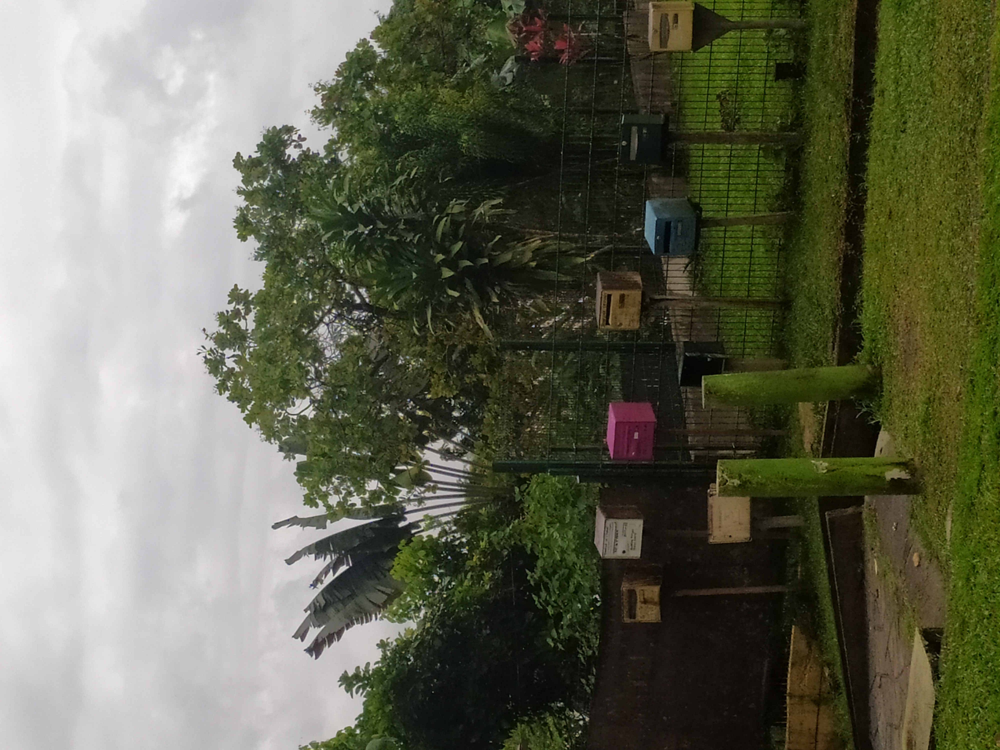
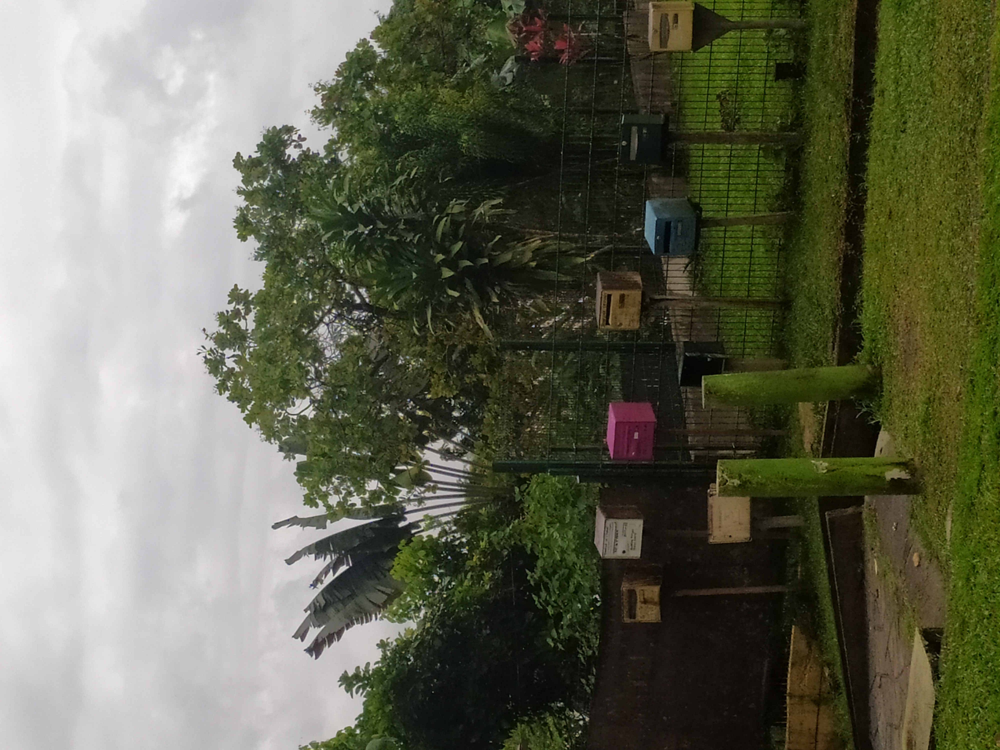

Les marais de l'est guyanais Kaw
 


"Pour les touristes, tu peux observer la faune avec les caravelles, tu peux même dormir là-bas."
"C'est magnifique, les marais, tu peux voir toutes sortes d'animaux. Moi je connais les coins, je peux te montrer, tu peux voir des caïmans, etc."
"C'est là où il y a le plus de moustiques, mais nous, on est habitués."
"Quand tu connais, c'est assez facile de voir certains animaux. L'hoazin à Kaw, c'est le seul oiseau ruminant sur terre, il y a aussi le coq de roche. Il y a des opérateurs touristiques là-bas, nuits et jours, donc ça protège, sinon ils seraient décimés. Si c'est du tourisme à 1000 places, ça craindra, mais à plus petite échelle, ça peut être bénéfique."